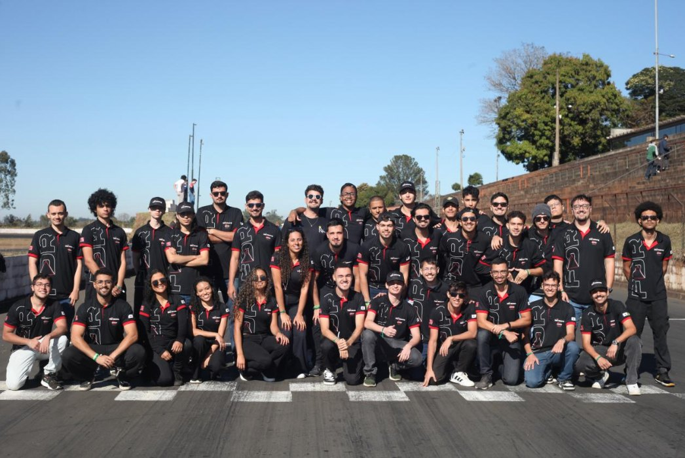
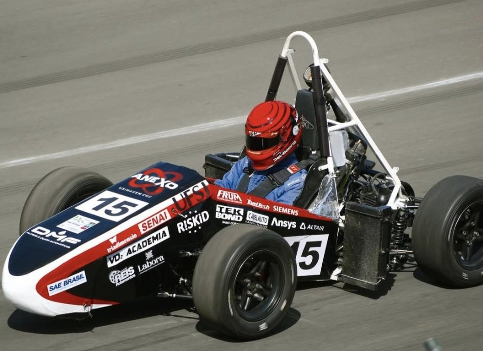
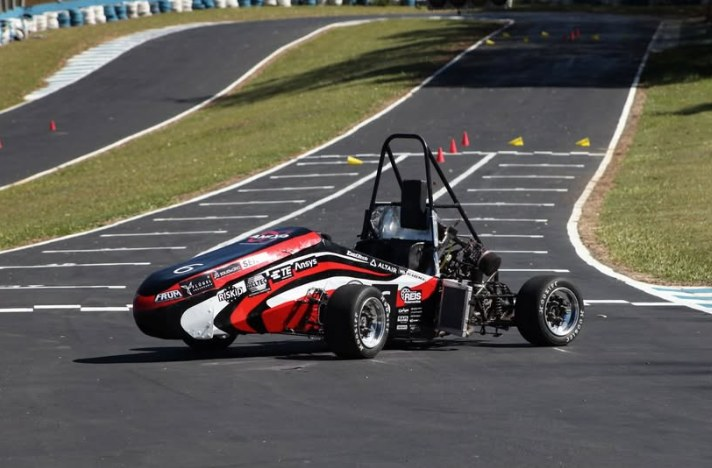
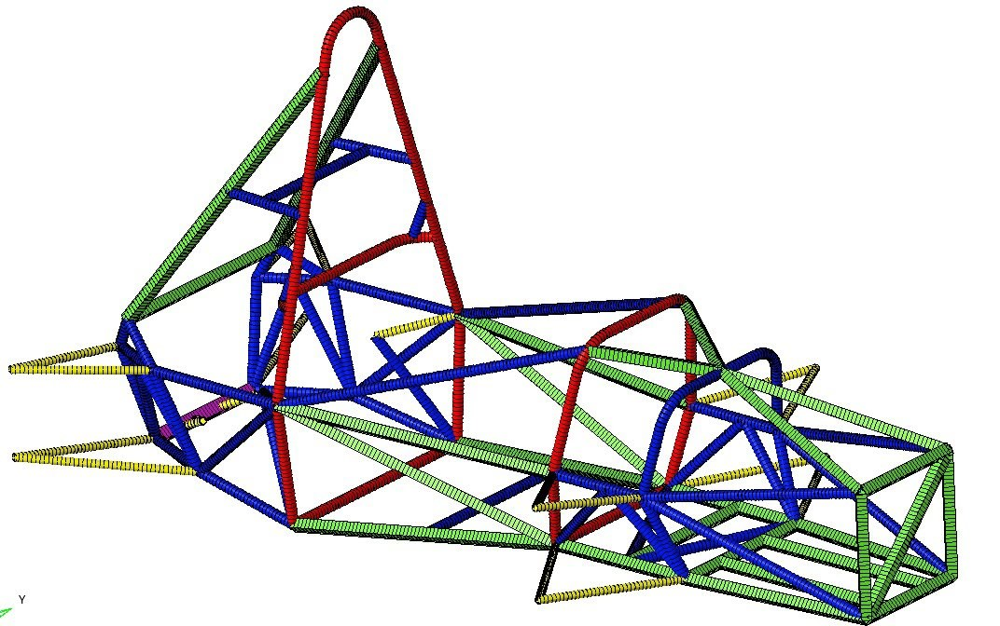
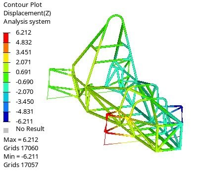
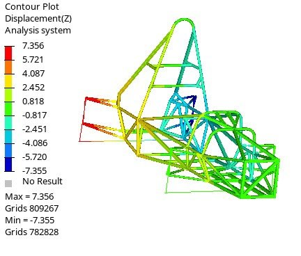
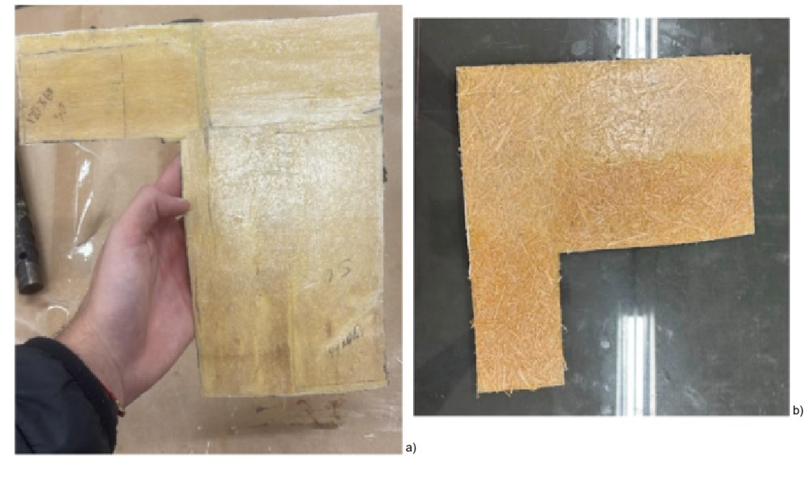
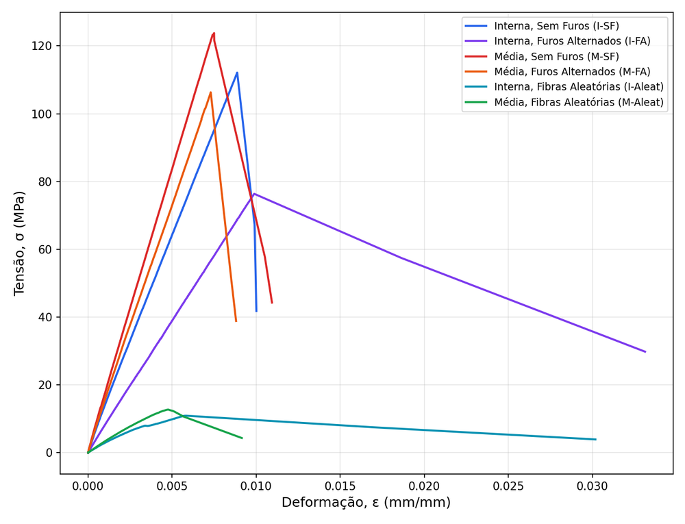

CFD, FEA and aerodynamics
Mechanical engineering student in a double-degree program at ENSEEIHT (Toulouse INP), focused on numerical simulation and aerodynamics for motorsport and aerospace. Former Project Manager of a Formula SAE team of more than 50 members.
I am a Brazilian mechanical engineering student at the Federal University of São João del-Rei (UFSJ), currently in a two-year double-degree program at ENSEEIHT, Toulouse INP, in the MF2E department with the FEP specialization: aerodynamics, numerical simulation and fluid mechanics.
My core strength is simulation validated against experiments. In the Formula SAE team Fórmula Del-Racing, I ran structural, modal and thermal analyses of the chassis, brake discs and drivetrain components in Altair HyperWorks, ANSYS and ANSYS Fluent, and helped bring the chassis from 40 kg to 29 kg. I then became Project Manager, coordinating more than 50 members across nine sectors.
What sets me apart is the combination of technical depth and leadership. In undergraduate research I designed and tested bio-composite laminates with a statistical approach, and I led the commercial area of an engineering junior company, from prospecting to contract closing. This gives me a practical view of how engineering decisions meet clients, budgets and deadlines.
I am looking for internships and end-of-studies internships (PFE) in aerodynamics, CFD, numerical simulation, and motorsport or aerospace engineering, in France and Europe.
Mechanical characterization of laminates made of castor-oil polyurethane resin reinforced with papaya stem bast fibres, a fully plant-based composite.
Responsible for the overall coordination of the Formula SAE team's entire project, integrating the technical sectors to meet deadlines, performance targets and competition requirements.

Member of the finite element analysis sector, running structural, modal and thermal analyses of critical vehicle components.
Developed the team's first 2D simulation of the prototype chassis, comparing structural deformation results with the traditional 1D simulation and the data from the workshop torsion test.
This pioneering initiative increased the fidelity of the chassis analysis and enabled cross-validation between computer simulation and physical testing, improving the precision of design and sizing decisions.
Supported students in the sizing of shafts, bearings and mechanical transmissions.
Worked on predictive maintenance techniques based on mechanical vibration analysis to diagnose faults in rotating machinery.
Led the company's sales operations: client prospecting, commercial proposals, contract closing and sales funnel management. Designed and implemented direct sales strategies focused on sustainable results and value for clients.
Trainee in the commercial area, learning the fundamentals of client prospecting, technical sales, proposal writing and CRM use, in preparation for taking over the company's commercial management.
Structural modelling of the Formula SAE tubular chassis. I developed the team's first 2D (shell) model of the FDR-05 chassis and cross-checked it against the 1D (beam) model and the physical torsion test. The same approach then supported the FDR-06 redesign, in which I took part in design, assembly and development, and which reduced the chassis mass from 40 kg (FDR-05) to 29 kg.





Castor-oil polyurethane matrix reinforced with papaya bast fibre layers. Two fibre layer types (inner and middle) and three reinforcement morphologies (continuous without holes, continuous with alternating holes, random short fibres) were compared in tension and three-point bending.
Condition means from the second fabrication batch, n = 3 to 5 specimens each. Tests per ASTM D638 and D790.


Option pricing by Monte Carlo simulation (geometric Brownian motion, Euler-Maruyama scheme, variance reduction), validated against the Black-Scholes formula. Same approach as in engineering: build the numerical model, then validate it against a reference.
CAPES/BRAFITEC scholarship.